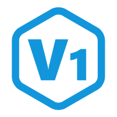

城市切换

切换城市
支持全国多个城市的公交、地铁出行
先乘车，后付费，出行更便捷
选择城市
北京
地铁 · 公交
上海
地铁 · 公交
广州
地铁 · 公交
深圳
地铁 · 公交
杭州
地铁 · 公交
成都
地铁 · 公交
南京
地铁 · 公交
武汉
地铁 · 公交
确认切换
我已阅读并同意《出行码服务协议》
出行码
北京
请对准闸机扫码
60
秒后自动刷新
出行记录
模拟操作
模拟进站
模拟出站
出站成功
进站：
天安门东站
出站：
王府井站
时长：
15分钟
费用：
¥4.00
返回
查看记录